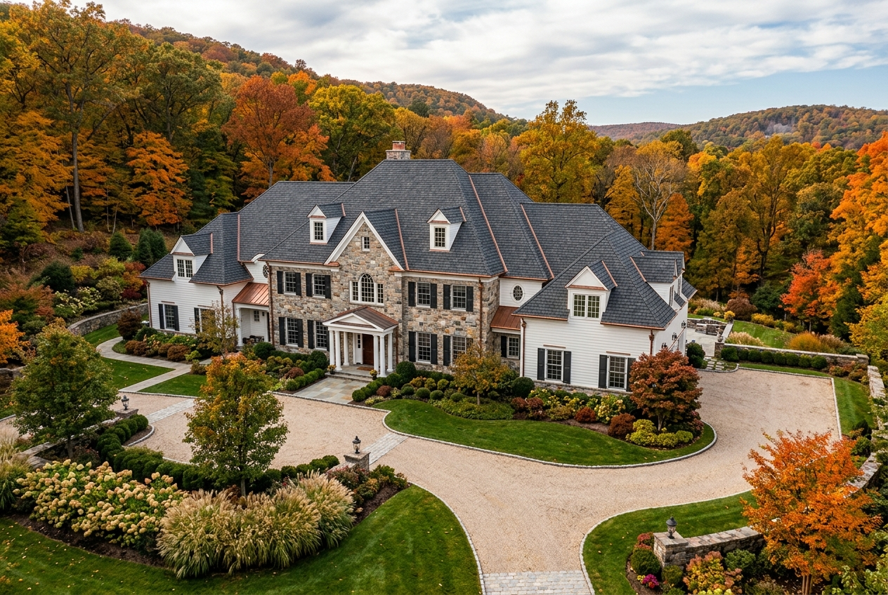
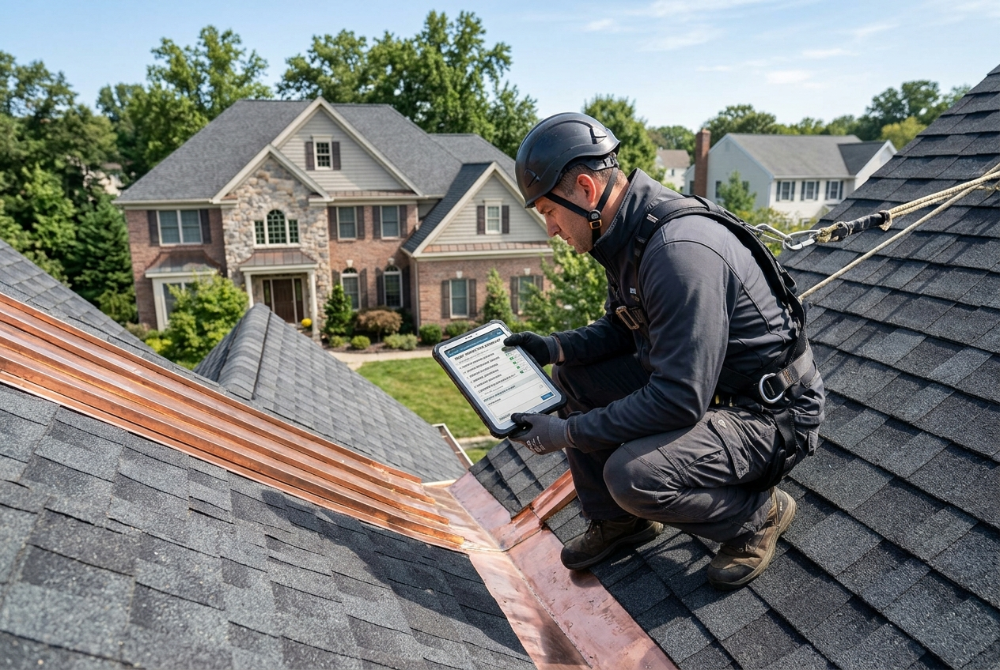

Precision Roof Repair
Targeted leak detection, replacement of wind-damaged or lifted shingles, valley repairs, and custom flashing rehabilitation for complex Warren rooflines.
Explore Roof RepairBridgewater Roofer provides master architectural shingle replacement, complex valley waterproofing, storm damage repairs, and dedicated estate roofing care for homeowners across Warren Township and Somerset County.

Whether dealing with mountain wind lift, aged chimney flashing on high gables, or planning an architectural shingle replacement, our local crews provide prompt diagnostics.

Warren Township features some of Somerset County’s most prestigious residential properties, characterized by sprawling custom estates, executive colonials, French country designs, and multi-level hillside homes nestled among the Watchung Mountains. These expansive roof systems typically feature steep pitches (ranging from 8/12 to 14/12), intricate rooflines, multiple intersecting valleys, dormers, and prominent masonry chimneys.
Due to Warren’s elevated topography and dense surrounding canopies of mature oak and maple trees, homes throughout the 07059 ZIP code face unique microclimate stresses. Higher altitude wind gusts channel through mountain passes, testing asphalt shingle wind ratings. Heavy autumn leaf drop accelerates debris buildup in roof valleys and gutters, and winter temperatures regularly cause persistent snow accumulation and freeze-thaw cycles on north-facing roof slopes.
At Bridgewater Roofer, we tailor our roof installations and repair solutions to the exact demands of Warren properties. From installing heavy-weight designer shingles and self-adhering ice-and-water barrier shields to precision lead-coated copper valley fabrication and custom skylight flashing, we ensure your home receives lasting weather protection and exceptional architectural curb appeal.
Every home in Warren has distinct structural characteristics. We deliver high-caliber roof repair, system replacements, and proactive maintenance built for Somerset Hills weather.
Targeted leak detection, replacement of wind-damaged or lifted shingles, valley repairs, and custom flashing rehabilitation for complex Warren rooflines.
Explore Roof RepairComplete tear-off and installation of high-definition designer architectural shingles, heavy-gauge synthetic underlayment, and ridge ventilation systems.
Explore Roof ReplacementPinpoint thermal and visual tracing to locate the exact origin of interior ceiling spots, attic dampness, or hidden moisture around complex dormer transitions.
Explore Leak RepairRapid structural tarping, temporary leak containment, and fallen tree branch hazard mitigation following severe nor’easters and mountain thunder cells.
Emergency Roofing ServicesCustom step and counter-flashing on brick and stone chimneys, replacement of leaking curb-mounted skylights, and soldered copper pans for dead valleys.
Flashing SolutionsPremium roofing systems including GAF Camelot, CertainTeed Grand Manor, composite slate, and cedar-shake alternatives offering dramatic luxury aesthetics.
Residential SystemsLow-slope single-ply TPO, EPDM rubber membranes, and perimeter metal edge flashing for commercial centers, offices, and institutions along Mountain Boulevard.
Commercial RoofingHigh-resolution drone scans for steep inaccessible mountain roofs combined with thorough attic decking and ventilation evaluations.
Schedule InspectionDue to steep pitches, high winds, and dense tree canopies, estate roofs in Warren face distinctive wear patterns. Select any component below to view the diagnostic profile.
Warren estates frequently feature large stone or brick fireplaces. Moisture penetrates when lead or copper step flashing corrodes or mortar joins crack along the roof-to-chimney junction.
Precision re-flashing with heavy-gauge aluminum or soldered copper, reglet saw-cutting, and polyurethane masonry sealant.
Warren’s elevated terrain creates specific seasonal weather patterns that test roof sealants, metal flashing, and attic ventilation systems.
Heavy downpours test valley drainage and eave gutters. Saturated organic debris from surrounding woods can trap water against lower shingle edges.
Unshaded high-elevation roof surfaces absorb intense heat up to 150°F, accelerating granule loss and testing thermal expansion joints on large flashing runs.
Warren’s mature hardwoods deposit dense foliage into roof valleys and dead spots. Unchecked organic buildup holds moisture and triggers moss growth.
Sub-zero temperatures and mountain elevation cause deep snowdrifts on leeward slopes. Rapid melting and nighttime re-freezing generate heavy ice dams.
From premier multi-acre estates on Mount Horeb Road to contemporary executive subdivisions off King George Road, we bring specialized expertise.
Sprawling single-family residences requiring premium designer architectural shingles, custom copper valleys, and multi-tier flashing craftsmanship.
Traditional center-hall and transitional colonials built during the 1990s and 2000s now reaching their 20-25 year roof replacement milestone.
Consistent HOA-approved shingle color matches, uniform architectural aesthetics, and coordinated multi-unit re-roofing projects.
Low-slope commercial membrane installations (TPO/EPDM) along Mountain Boulevard and surrounding corporate parks.
We provide honest, objective roof condition assessments. We never recommend a complete replacement when a targeted, lasting repair can solve the issue.
Ideal when the underlying asphalt matting remains pliable and problems are isolated.
Recommended when structural components or shingle layers have reached the end of their design life.
From the initial phone consultation to meticulous ground cleanup with magnetic sweepers, our workflow ensures seamless communication and premium execution.
Prompt phone intake to understand your roof concern, timeline, and property details.
Physical roof-surface inspection, valley checks, flashing evaluation, and attic ventilation assessment.
Transparent itemized scope of work with material options, clear pricing, and no surprise hidden fees.
Filing of necessary paperwork with Warren Township Construction Department and material delivery.
Comprehensive shielding of your landscaping, shrubbery, driveways, and decks prior to any work.
Certified tear-off, decking re-nailing, ice & water barrier installation, and precision shingle application.
Multi-pass magnetic sweeps of all lawn, bed, and driveway areas to ensure no stray nails remain.
In-person client inspection, final photo documentation, and warranty certificate delivery.
In Warren Township, full roof replacements and structural roof decking repairs require building permits submitted to the Warren Township Construction Department located at 46 Mountain Boulevard, Warren, NJ 07059. New Jersey Uniform Construction Code (UCC) guidelines enforce specific ice barrier membrane extensions along eaves and valleys due to Somerset County’s winter freezing temperatures.
Bridgewater Roofer manages the complete municipal permit preparation and documentation process, ensuring all materials, wind-rating specifications, and inspections meet or exceed Warren Township standards.
Because every property in Warren differs in square footage, pitch, and architectural complexity, honest pricing is calculated based on exact structural factors.
Larger square footage and high numbers of dormers, hips, and valleys require increased material cuts and flashing time.
Steeper slopes (8/12 pitch and greater common on Warren estates) require advanced safety harnesses, scaffolding, and slower staging.
Choices range from standard architectural shingles to heavy-duty designer laminate shingles (e.g., GAF Camelot or CertainTeed Grand Manor) and custom metal accents.
Any water-damaged, deteriorated CDX plywood or tongue-and-groove planking identified after tear-off must be replaced for structural warranty integrity.
Get a detailed, transparent price quote customized to your Warren home.
Call (908) 465-9944 for an Itemized EstimateLocal proximity, master-level craftsmanship, and uncompromising integrity make us the preferred roofing contractor for Somerset County.
Based right next door in Bridgewater, our project managers and crews are minutes away from Warren, ensuring swift response times.
Comprehensive New Jersey Home Improvement Contractor licensing and full workers’ compensation and general liability coverage.
Certified installation procedures unlock 50-year non-prorated manufacturer system warranties on complete architectural replacements.
Heavy-duty tarping, plywood wall shields, gutter protectors, and thorough magnetic cleanups protect your Warren property.
Real experiences from homeowners throughout our central New Jersey service territory.
"We had a stubborn leak around our stone chimney on our Warren home that two other roofers failed to stop. Bridgewater Roofer rebuilt the copper counter flashing and solved the problem completely in one visit. Exemplary craftsmanship."
"Outstanding replacement on our 3,800 sq ft colonial. Their crew was polite, kept our grounds spotless, and finished the architectural roof and new skylights in two days flat. Couldn't recommend them more highly."
"After high winds stripped shingles off our mountain property, they arrived within hours to tarp the section before the rain hit. Handled the subsequent repair flawlessly. True professionals."
Based in Bridgewater, we deliver rapid dispatch and full roofing solutions to neighboring towns throughout the Somerset Hills and Watchung region.
Our central operations hub providing rapid dispatch, emergency repairs, and full residential roofing replacements.
Bridgewater Roofing HubDirectly adjacent along the Watchung ridge, featuring wooded estates and specialized steep-pitch roof protection.
View Martinsville ServicesDirectly north in Bernards Township, offering historic preservation roofing and executive colonial replacements.
View Basking Ridge ServicesSomerset County seat with historic downtown Victorians, multi-family residences, and retail commercial flat roofs.
View Somerville ServicesBorough community located just south down the mountain slope along the historic Raritan River corridor.
View Bound Brook ServicesExpansive suburban township southwest of Warren with extensive developments and wind-resistant shingle needs.
View Hillsborough ServicesCommon questions regarding roof repair, permits, materials, and emergency response in Warren Township.
Yes. Bridgewater Roofer provides comprehensive roof repair services throughout Warren (ZIP 07059). We diagnose and repair all issues including missing wind-blown shingles, valley leaks, deteriorated chimney flashing, pipe boots, and skylight perimeter leaks.
Yes. Warren Township requires a building permit from the Warren Township Construction Department (46 Mountain Blvd) for full roof replacements. Our team prepares all necessary permit filings, manufacturer specifications, and coordinates required township inspections.
We recommend heavy-weight architectural or designer laminate shingles (such as GAF Timberline HDZ / Camelot II or CertainTeed Landmark Pro / Grand Manor). These shingles offer Class F 130-MPH wind ratings, Dura Grip adhesive seals, and enhanced algae resistance (StreakGuard/StainGuard) essential for wooded hillside properties.
Our technicians are OSHA-trained and equipped with specialized steep-slope staging, safety harnesses, and roof brackets. We also utilize high-resolution aerial drone cameras to safely assess multi-tier pitches and intricate gables without disturbing delicate slate or architectural finishes.
Because our staging yard is located nearby in Bridgewater, we offer rapid emergency response across Warren. We provide same-day emergency tarping and temporary leak containment following severe windstorms, nor'easters, or tree strikes.
Yes. In addition to high-end residential roofing, we install and service commercial flat roof systems including energy-reflective TPO single-ply membranes and durable EPDM rubber for medical facilities, offices, and retail properties in Warren.
We treat every Warren estate with total care. Before tear-off, we erect reinforced tarps and plywood shielding over flower beds, shrubs, and ornamental plants. Dump trailers are placed on protective wood boards to shield pavers and asphalt driveways, followed by rigorous magnetic sweeps for fasteners.
Most residential roof replacements in Warren are completed in 1 to 2 days, depending on square footage, pitch, and the number of layers being removed. Our large, experienced crews ensure projects progress quickly without compromising quality or safety.
Explore our professional guides to better understand roof longevity, ventilation, and investment planning.
A comprehensive review of what influences residential roof costs throughout Somerset County, New Jersey.
Read Cost GuideComparing heavy-weight multi-layer shingles, wind warranties, and curb appeal for custom executive homes.
Explore Shingle TypesHow balanced soffit intake and ridge exhaust prevent winter freeze-thaw water backup on mountain properties.
Learn About VentilationWhether you need prompt leak troubleshooting, an architectural shingle replacement quote, or a preventative inspection, our local team is ready to help.